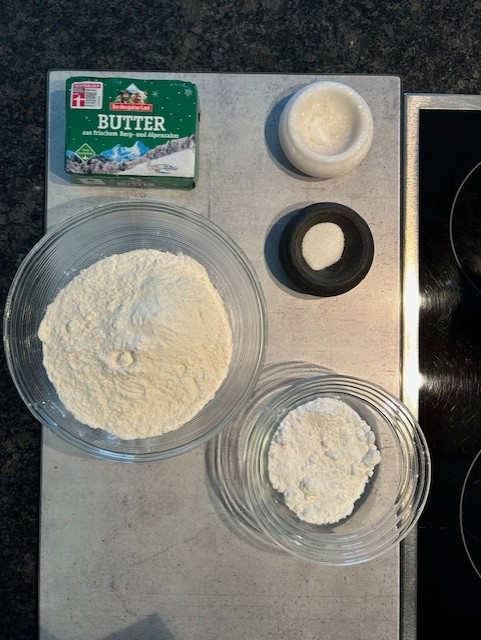
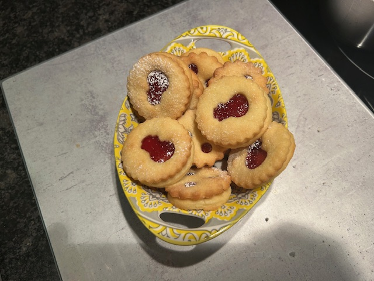

Ingredients
- 175g Soft Butter
- 80g Powdered Sugar
- 1 pinch of Salt
- 1 teaspoon Vanilla Sugar
- 250g Flour
- Optional: Powdered Sugar for Dusting

Instructions
-
Place butter in a bowl and stir until it forms peaks.
-
Add powdered sugar, salt, and vanilla sugar and stir.
-
Sift in the flour, mix everything, and knead together by hand.
-
Cover and let rest in a cool place.
- Roll out the dough to 3 mm thickness.
- Cut out round cookies and divide into two groups. Decorate one half with shapes, leave the other half plain.Preheat the oven to 200°C, place cookies on a baking sheet, and bake for about 6 minutes.
- Heat your favorite jam and spread it on the plain cookie bases. Place the decorated tops on top, and your Spitzbuben are ready.

